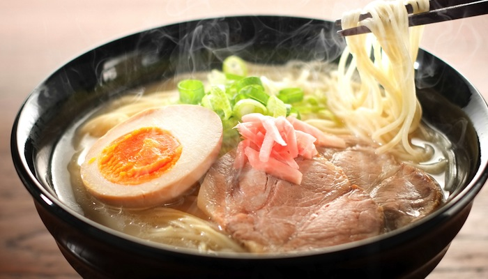
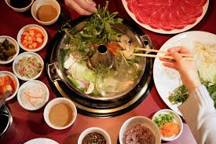
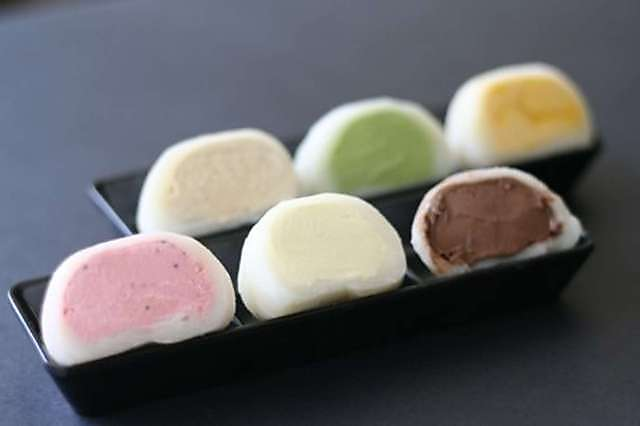
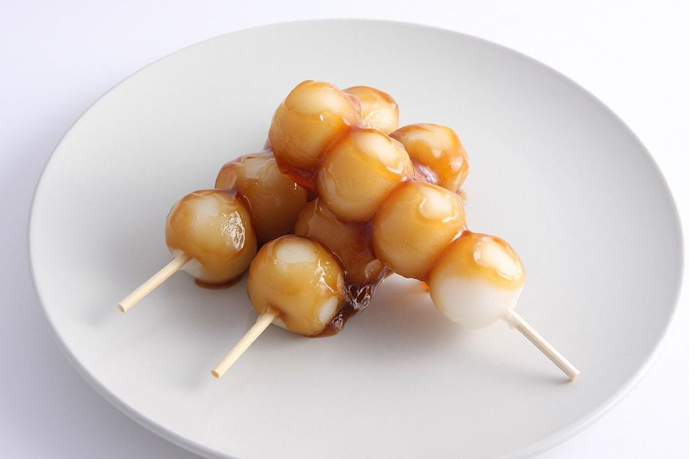
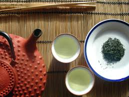
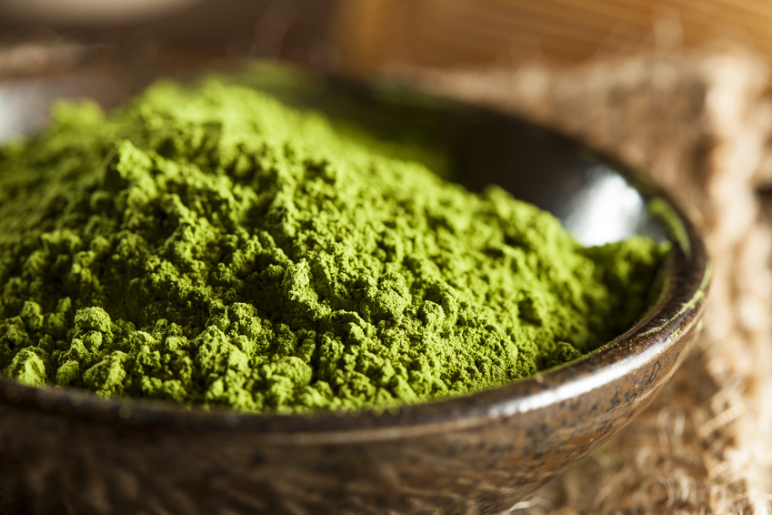
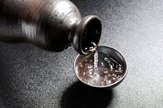

TThe landscape of cuisine in Tokyo best demonstrates how Japan offers great depth in its food variety and creativity with common food staples of rice, noodles, and fish. Sushi is the most universally well-known symbol of Japanese cuisine on the international front; however. More traditionally, matcha green tea plays a very prominent role in culture and customs such as the famed tea ceremony.
food
Japanese cuisine is traditionally based on rice, miso soup, and the inclusion of other seasonal ingredients. There is emphasis placed on seasonal ingredients and freshness. Rice is a common food staple, but noodles is another popular grain eaten throughout the nation. Soba buckwheat noodles and udon thick wheat noodles are the most common varieties of noodles. Since Japan is composed of islands and completely surrounded by water, its people have taken advantage of their surrounding natural resources. Fish and seafood provide much of the needed protein in Japanese dishes.
sushi
Cooked vinegared rice is paired with raw fish or other vegetables
raw-fish based dish is a food export that has launched Japanese cuisine to the international stage

ramen
noodle soup dish cooked in a savory broth
often flavored with soy sauce and topped off with meats, seaweed, vegetables, and fresh green onions

shabu-shabu
hotpot dish of thinly sliced meat and vegetables boiled in hot water
the name of the dish comes from the sound the food makes as it cooks
sweets
Japanese sweets are known as wagashi. They commonly feature flavors based on red bean paste or matcha. The green tea matcha flavor has more recently taken root in modern iterations of Japanese sweets. Tokyo, in particular, is a hub for modernized Japanese desserts; many recent dessert innovations have come out of the capital city.

mochi ice cream
ice-cream covered ball of mochi, a sweet rice cake
originally an American creation, but many cafes in Tokyo have put their own spin on this popular dessert; matcha green tea ice cream is the most popular flavor

dango
sweet dumpling made from rice flour
several of these miniature balls are skewered together and paired together with green tea
drinks
Japanese drinks and beverages cover a wide spectrum. Tea is by far the most important drink staple in the island nation. Some drinks fare on the sweeter side, sugary carbonated beverages specifically marketed toward kids. They often feature anime characters or kawaii packaging to appeal to younger sensibilities. More alcoholic drinks targeted to adults include sake and beer as a more common drink option.

tea
cured leaves steeped in hot water
essential to the japanese lifestyle, especially green tea and is consumed throughout the day and is cultivated all over the nation; the drink has a long history that dates back centuries when it was first imported from china

matcha
powdered green tea
derived from special green tea leaves and comes in the form of a light green ground powder. matcha is a popular tea-based flavoring for sweets

sake
brewed rice beverage with 15% alcohol content
usually served in an earthenware or porcelain bottle and drunk from small porcelain cups